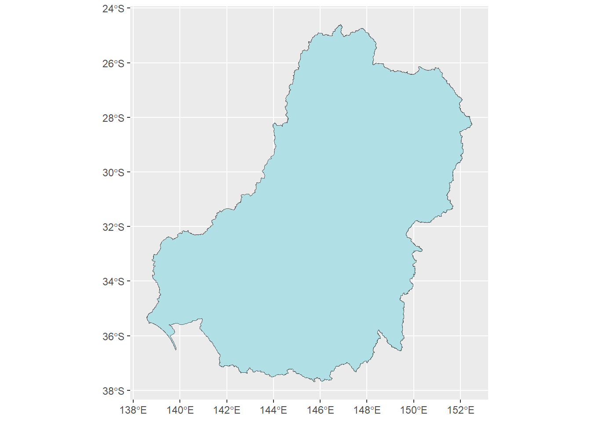
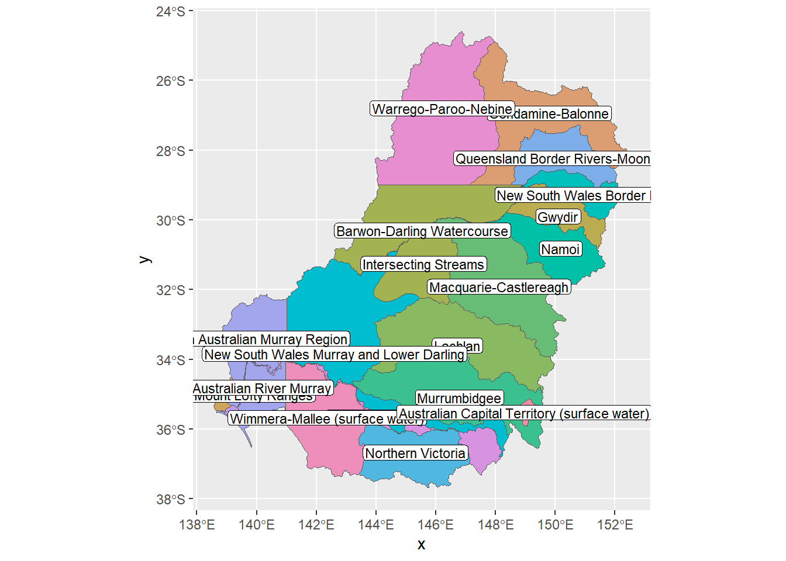
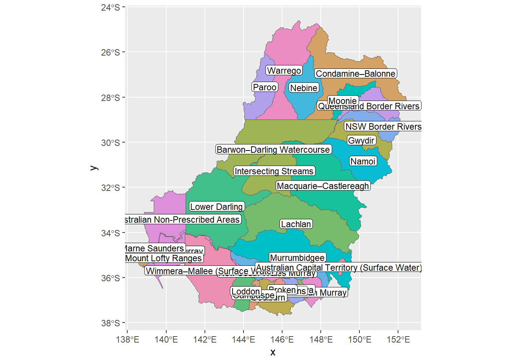
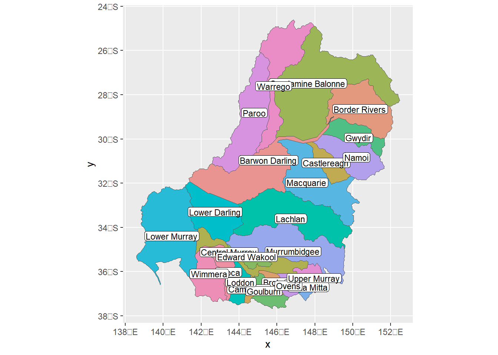
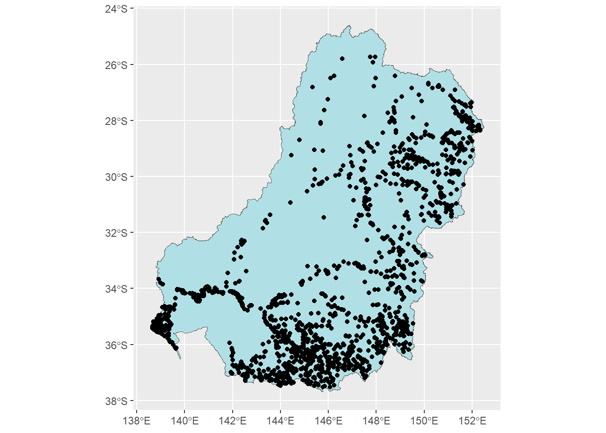

library(werptoolkitr)
library(ggplot2)Spatial data
Visualizing spatial data from werptoolkitr
The {werptoolkitr} package provides a standard set of spatial data, generated in data_creation/spatial_data_creation.qmd. Here, we make quick plots of the data so we know what it looks like.
The datasets are bom_basin_gauges (points), and basin (the MDB as a single polygon), sdl_units, resource_plan_areas, and cewo_valleys. Relevant to the case study- the original polygon used was the Macquarie-Castlereagh in the sdls. The crs all match from the creation.
Basin
ggplot(basin) + geom_sf(fill = 'powderblue')
Resource plan areas
ggplot(resource_plan_areas) + geom_sf(aes(fill = SWWRPANAME), show.legend = FALSE) +
geom_sf_label(aes(label = SWWRPANAME), size = 3, label.padding = unit(0.1, 'lines')) +
colorspace::scale_fill_discrete_qualitative(palette = 'Set2')Warning in st_point_on_surface.sfc(sf::st_zm(x)): st_point_on_surface may not
give correct results for longitude/latitude data
These have ‘SW’ codes
resource_plan_areasSDL plan areas
ggplot(sdl_units) + geom_sf(aes(fill = SWSDLName), show.legend = FALSE) +
geom_sf_label(aes(label = SWSDLName), size = 3, label.padding = unit(0.1, 'lines')) +
colorspace::scale_fill_discrete_qualitative(palette = 'Set2')Warning in st_point_on_surface.sfc(sf::st_zm(x)): st_point_on_surface may not
give correct results for longitude/latitude data
These have ‘SS’ codes.
sdl_unitsCatchments
ggplot(cewo_valleys) + geom_sf(aes(fill = ValleyName), show.legend = FALSE) +
geom_sf_label(aes(label = ValleyName), size = 3, label.padding = unit(0.1, 'lines')) +
colorspace::scale_fill_discrete_qualitative(palette = 'Set2')Warning in st_point_on_surface.sfc(sf::st_zm(x)): st_point_on_surface may not
give correct results for longitude/latitude data
These have names, ID, and ValleyCodes
cewo_valleysGauges
ggplot() +
geom_sf(data = basin, fill = 'powderblue') +
geom_sf(data = bom_basin_gauges)
bom_basin_gauges